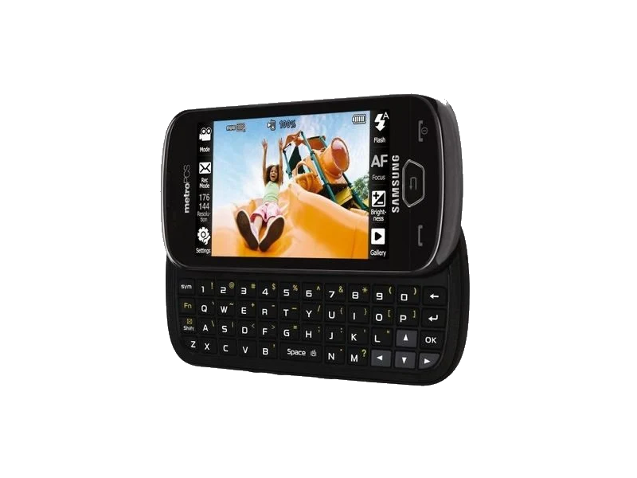
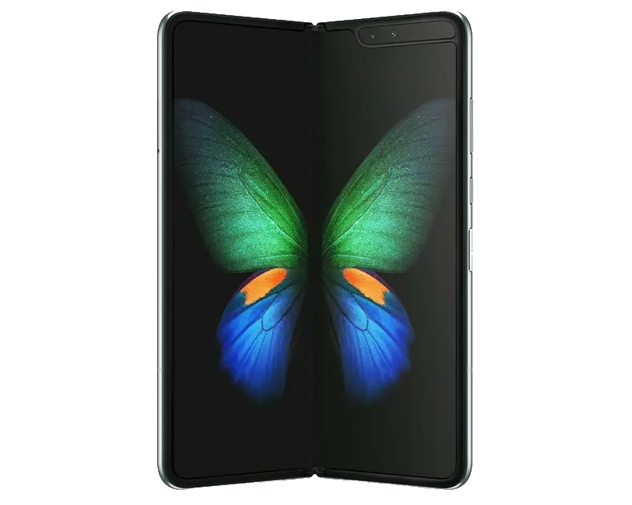
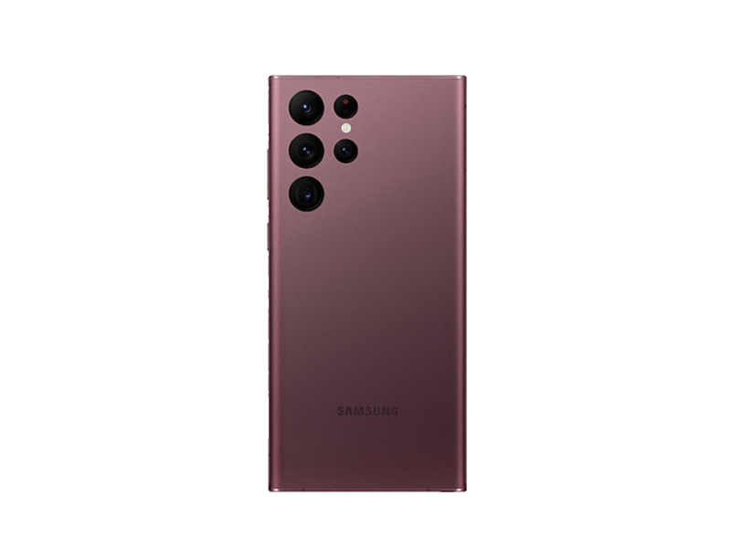

iPhone 2G [2007]
L'iphone 2G est commercialisé en juin 2007 au Etat-unis. Ce téléphone est une révolution dans le monde technologique car il surpassé tous les modèles de l'époque.
Plus d'info.Samsung SCH-R900 [2010]
C'est le premier Smartphone compatible 4G lte. Il est commercialisé en 2010.
Plus d'info.Galaxy Fold [2019]
Le Galaxy Fold est l'un des premiers téléphones capables de se plier en 2, il est commercialisé en septembre 2019 mais n'a pas eu un grand succès dû à son prix : 2000 euro, et de ses successeurs plus performant et moin cher.
Plus d'info.S22 ultra
C'est une des dernières sorties de 2022 il est équipé de 5 G d'un écran 120hz et il peut aller sous l'eau à moins d'1 mètre pendant 1h max.
Plus d'info.